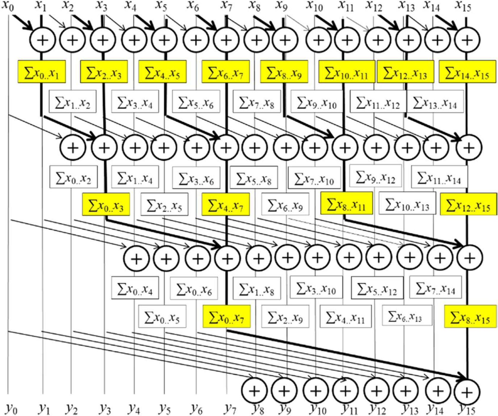
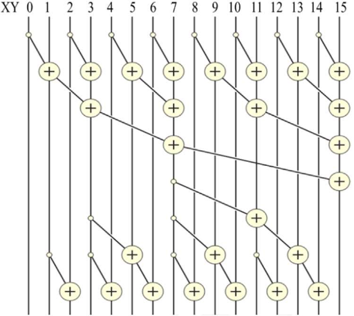
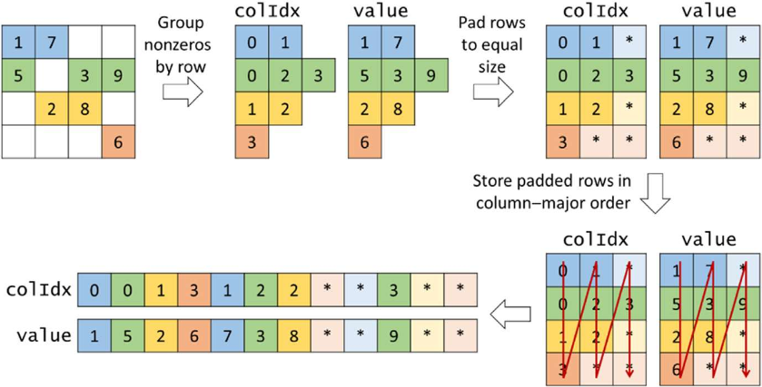
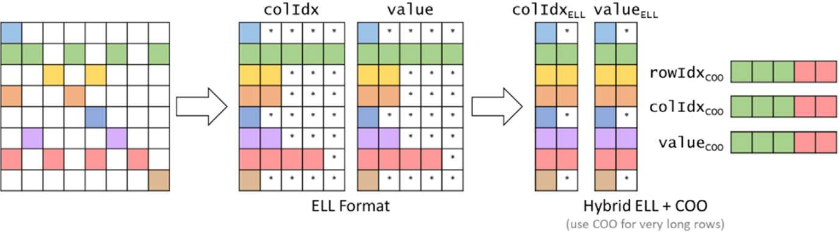
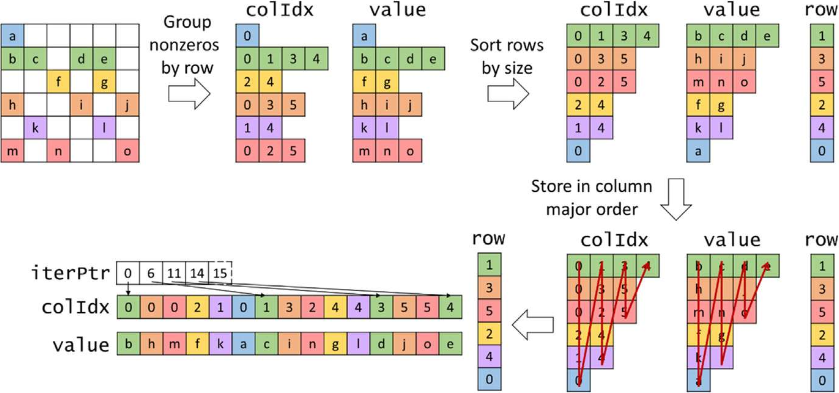

cuda 入门
学 cuda, 写点总结
硬件
抽象
优化
合并内存访问
平铺
线程粗化
应用
规约
归并
前缀和
Kogge-Stone
没什么好说的, 和树形规约看上去挺像的, 区别在于每次迭代参与的线程是哪些: 规约在每一轮都把一半的数据计算贡献后抛弃, 而前缀和是每一轮计算完成计算完成了前 $2^{offset}$ 的前缀和, 但是不抛弃这些数据, 后续仍会用到
或者看做类似 st 表和 LCA 的倍增算法, 第 stride 轮的第 i 项代表 sum([i - 2**stride, i])

1 | __global__ void Kogge_Stone_scan_kernel(float *X, float *Y, unsigned int N){ |
也类似 ST 表, 总的计算量是 $\mathrm O(n\log n)$, 对前缀和来说偏大
而且受制于显示中资源的限制, SECTION_SIZE 不可能太大, 效率还会进一步下降
Brent-Kung
我们实际上无用计算了很多部分, 尤其是 stride 小而 i 大的部分
考虑怎么减少这部分
- upsweep 就是先构造一个树状数组,
index从1开始的情况下 (很遗憾代码是从0开始的, 所以接下来会有点混乱),XY[i]存储的就是sum(i - lowbit(i), i]
树状数组的前缀和查询就是 i -= lowbit(i) 的 XY[i] 循环累加, 逐个累加总计算量还是太高, 考虑通过贡献计算
- downsweep 的过程是使树状数组维护的区间和真正变成前缀和:
假设当前时刻所有 lowbit(i) >= stride 的位置都已经完成处理, 即 XY[i] == pre[i]; 初始时 XY[1000..000] == pre[1000..000] 满足条件
处理 i 时需要 XY[i - lowbit(i)] 已经完成处理:
注意到, 当 x = stride 是 2 的幂时, 设 $p = (2n + 1)x$, 则 $\mathrm{lowbit}(p) == x$, $\mathrm{lowbit}(p - x) = 2nx \ge x$
所以 $p - x$ 的位置一定已经完成了处理, pre[p] 可以直接由 XY[p - x] + XY[p] 得出

1 | __global__ void Brent_Kung_scan_kernel(float *X, float *Y, unsigned int N) { |
Brent-Kung 主要减少的是计算次数, 可能使用于限制能耗的场景; 单纯的计算时间可能不如 Kogge-Stone, 毕竟要做两遍计算
SpMV (*Sparse Matrix-Vector Multiplication*)
一个稀疏矩阵乘一个向量, 一般认为这个向量是稠密的
COO (*COOrdinate*)
最简单的形式, 坐标表 row[n], col[n], val[n] 记录稀疏矩阵中非 0 位置的坐标和值. 并行处理非 0 值
1 | __global__ void SpMV_COO(const coo* matrix, const float* x, float* y) { |
- 空间效率: 高
- 灵活性: 可任意增删元素
- 可访问性: 简单获取当前元素的行列坐标, 但无法快速遍历某行某列
- 控制发散: 无
- 内存访问: 全部合并
- 由于相同行的值会在不同线程累加到同一个位置, 需要额外的原子操作开销
CSR (*Compressed Sparse Row*)
将坐标按所属的行分类. 并行处理所有行, 一行的内容在一个线程内处理, 避免原子操作的开销
1 | __global__ void SpMV_CSR(const csr* matrix, const float* x, float* y) { |
- 空间效率: 高
- 灵活性: 增删元素 需要整体挪动后续坐标
- 可访问性: 简单获取当前元素的行列坐标, 只能快速遍历某行
- 控制发散: 取决于一个 warp 内不同行间非 0 列的长度差异
- 内存访问: 非合并
ELL (*ELLPACK 中使用的 SpMV 实现方式*)
将坐标按所属行分组后, 将所有行填充 0 至最长的那一行; 而后存储为列主序的数组; 并行处理所有行

1 | __global__ void SpMV_ELL(const ell* matrix, const float* x, float* y) { |
- 空间效率: 取决于不同行间非 0 列的长度差异
- 灵活性: 在非最长的一行增加元素可以直接把占位的 0 改为要增加的值; 在最长的一行增加则需要增加全体占位
- 可访问性: 简单获取当前元素的行列坐标, 只能快速遍历某行
- 控制发散: 取决于一个 warp 内不同行间非 0 列的长度差异
- 内存访问: 合并
ELL-COO
注意到在有几列相当长的情况下, 填充会带来相当大的内存浪费, 我们可以把超过阈值的几行多出来的部分使用 COO 来存储; 其他部分依旧使用 ELL

JDS (*Jagged Diagonal Storage*)
JDS 将不同行按照包含的非 0 列的多少进行排序, 并行处理所有行; 通过排序, 一个 warp 内不同行间的非 0 列长度基本是相近的, 可以减少控制发散; 改为列主序也是为了合并内存访问

代码和 ELL 差不多
排序的消耗可能比较大, 更适合多次使用这一矩阵的情景
BFS
有并行处理顶点 / 边 / bfs 队列的
但是我感觉都不如直接用邻接矩阵做矩阵快速幂
可能中间结果矩阵会变稠密, 导致空间上涨